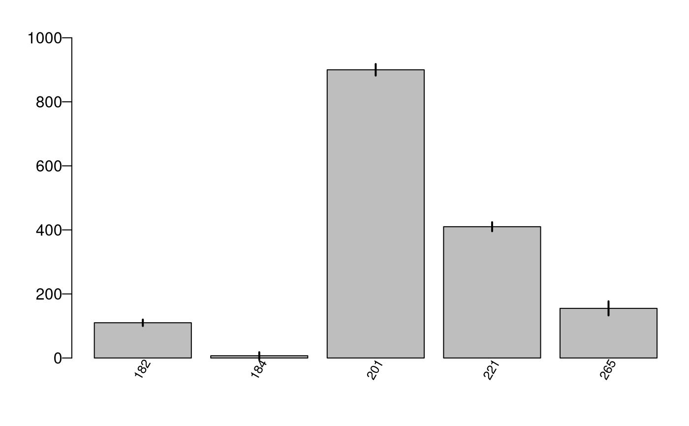

Generate a barplot of from a frequency data frame.
Usage
datBarplot(
x,
xvar = NULL,
yvar = "FREQ",
grpvar = NULL,
errbars = FALSE,
x.order = NULL,
sevar = NULL,
psevar = NULL,
device.type = "dev.new",
jpeg.res = 300,
device.height = 5,
device.width = 8,
horiz = FALSE,
toplabelvar = NULL,
ylim = NULL,
divideby = NULL,
ylabel = NULL,
xlabel = NULL,
mar = NULL,
addlegend = FALSE,
main = NULL,
cex.main = 1,
cex.label = 1,
cex.names = 0.8,
las.xnames = 0,
las.ynames = 1,
savedata = FALSE,
outfolder = NULL,
outfn = NULL,
outfn.pre = NULL,
outfn.date = TRUE,
overwrite = FALSE,
...
)Arguments
- x
Data frame or comma-delimited file (*.csv) - a frequency table.
- xvar
String. Name of X variable.
- yvar
String. Name of the y variable (e.g., FREQ).
- grpvar
String. Name of the variable for grouping.
- errbars
Logical. If TRUE, error bars are added to bar plot (sevar or psevar must also be populated).
- x.order
String or Vector. Define order of xvar based on y values: descending ("DESC") or ascending ("ASC") or vector of row numbers. If NULL, the order of the input table is used.
- sevar
String. Name of the variable with standard error values.
- psevar
String. Name of the variable with percent standard error.
- device.type
String. Type(s) of device for plotting ("dev.new", "jpg", "pdf").
- jpeg.res
Integer. Resolution for jpeg image.
- device.height
Integer. Height (in inches) of barplot, if writing to file.
- device.width
Integer. Width (in inches) of barplot, if writing to file.
- horiz
Logical. If TRUE, bars are drawn horizontally with first bar at the bottom. If FALSE, bars are drawn vertically with first bar to the left (barplot parameter).
- toplabelvar
String. Name of variable in x for adding labels to place above each bar (e.g., NBRPLOTS.gt0).
- ylim
Number. A vector of min and max values, c(min,max) for the y axis (or x axis if horiz=TRUE). If NULL, defaults to maximum y value. If errbars=TRUE, the ylim defaults to the maximum y value plus the standard error.
- divideby
String. Conversion number for output ('hundred', 'thousand', 'million').
- ylabel
String. Label for the y axis (same as ylab).
- xlabel
String. Label for the x axis (same as xlab).
- mar
See par.. A numerical vector representing number of lines for margins (c(bottom, left, top, right).
- addlegend
Logical. If TRUE, adds legend to bar plot (only applicable if grouping).
- main
String. Title for plot.
- cex.main
Number. Expansion factor for title.
- cex.label
Number. A number representing cex in barplot (size expansion of x and/or ylabels.
- cex.names
Number. Expansion factor for axis names (bar labels) (e.g., 0.5 represents half the size.
- las.xnames
Number. The direction of x variable names (0,1,3). 0:diagonal (Default), 1:horizontal; 3:vertical.
- las.ynames
Number. The direction of y variable names (0,1,3). 0:diagonal (Default), 1:horizontal; 3:vertical.
- savedata
Logical. If TRUE, writes output data to outfolder (jpg and pdf).
- outfolder
String. The name of the output folder. If savedata=TRUE, all output saved to the outfolder. If savedata=FALSE, only a text file of input parameters is saved.
- outfn
String. The name of the output file if savedata=TRUE (*.csv). Do not include extension. If NULL, the file will be named BARPLOT_'yvar_date'.csv
- outfn.pre
String. Add a prefix to output name (e.g., "01").
- outfn.date
Logical. If TRUE, add date to end of outfile (e.g., outfn_'date'.csv).
- overwrite
Logical. If TRUE and exportshp=TRUE, overwrite files in outfolder.
- ...
additional arguments to pass to barplot(), including a list of arguments for legend() arguments (e.g., args.legend=list(x="topleft", bty="n"), for moving legend to topleft and removing box around legend).
Note
If savedata = TRUE, writes a jpg and pdf of barplot to outfolder.
To add legend parameters, add a parameter named args.legend, defined as a list of specific legend parameters (see ?legend)... e.g., args.legend=list(x="topright"). If specifying x and y, x defines the lower right corner of legend box and y defines the upper right corner of box.
Examples
# Set up data frame for example
ftyptab <- data.frame(cbind(FORTYPCD = c(182, 184, 201, 221, 265),
FREQ = c(110, 7, 900, 410, 155),
SE = c(10, 11, 18, 14, 22)))
# Create basic barplot
datBarplot(x = ftyptab, xvar = "FORTYPCD")
# Add standard errors to basic barplot
datBarplot(x = ftyptab, xvar = "FORTYPCD", errbars = TRUE, sevar = "SE")
